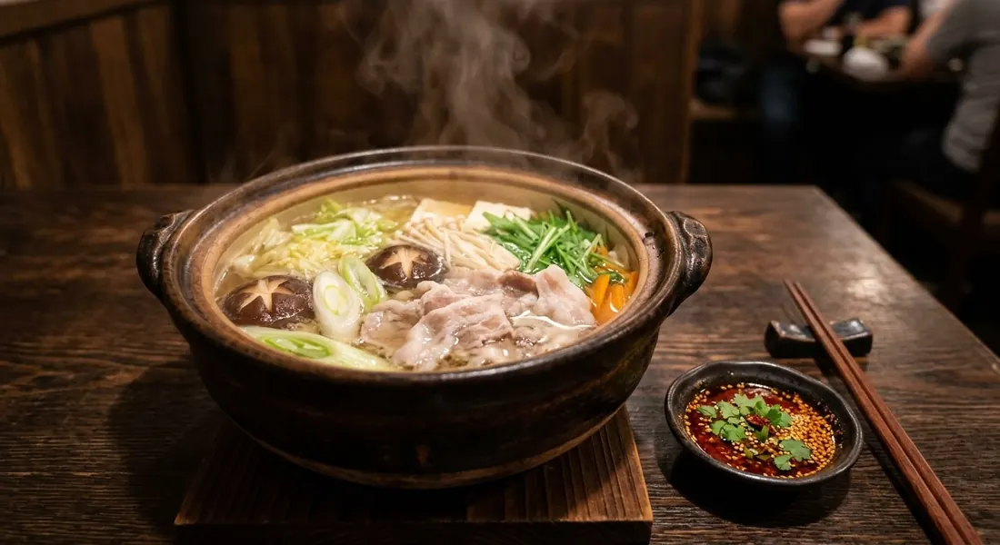

The hot pot Thailand borrowed from Japan and never gave back — dashi broth, marinated pork, and the fermented-tofu sauce that made it Thai.

สุกี้ยากี้ is Japanese sukiyaki by way of Bangkok — the MK restaurant chain took a Kyoto hot pot, dropped the raw egg, and added a sauce so Thai that it outgrew the dish it came with. The Thai sources treat the structure as three parts, and Tecnoplus names them: the broth, the marinated meat, and the vegetable set — with the whole thing existing in two forms, สุกี้น้ำ (the soup pot) and สุกี้แห้ง (the dry stir-fry version of the same ingredients).
The broth keeps its Japanese skeleton. Kapook's version is honest dashi — katsuobushi steeped in boiling water for two minutes then lifted, seasoned with Japanese soy and brown sugar, finished with sake and mirin. The quick school swaps in kombu alone. It's deliberately clean, because the flavour of Thai suki lives in the sauce, not the soup.
And the sauce is the dish. Pim's recipe — the MK-style standard — builds on red fermented tofu, blended with chilli sauce, fresh ground chillies, garlic, and pickled garlic with its brine, then balanced with sugar, salt, lime, vinegar, ground roasted sesame and sesame oil. The fermented tofu is, in her words, the soul of it: sweet, salty, funky and sesame-rich all at once. That's what makes suki Thai Thai.
| Thai | English | Amount |
|---|---|---|
| น้ำจิ้มสุกี้ (the sauce) | ||
| เต้าหู้ยี้สีแดง + น้ำเต้าหู้ยี้ | Red fermented tofu + brine | 4 cubes + 2 tbsp |
| ซอสพริก | Chilli sauce | 5 tbsp |
| พริกจินดาบด / กระเทียมบด | Ground chilli / garlic | 2 tbsp / 4 tbsp |
| กระเทียมดอง + น้ำ | Pickled garlic + brine | 3 heads + 3 tbsp |
| น้ำตาล / เกลือ | Sugar / salt | 3 tbsp / 1 tbsp + ½ tsp |
| น้ำมะนาว / น้ำส้มสายชู | Lime / vinegar | 3 tbsp / 3 tbsp |
| งาขาวคั่วบด / น้ำมันงา | Roasted sesame, ground / sesame oil | 2 tbsp / 1½ tbsp |
| น้ำซุป (the broth) | ||
| ปลาโอแห้ง / สาหร่ายคอมบุ | Katsuobushi / kombu | to taste |
| ซอสถั่วเหลืองญี่ปุ่น / น้ำตาลทรายแดง | Japanese soy / brown sugar | to taste |
| สาเก / มิริน | Sake / mirin | to taste |
| To cook in the pot | ||
| หมูสันใน/สันคอ หมักไข่ | Pork, egg-marinated | 300 g |
| ผักชุด | Cabbage, morning glory, celery, spring onion | a platter |
The quick sauce (Tecnoplus): chilli sauce, ketchup, white soy, sugar and vinegar simmered until thick, sesame oil off the heat. The quick broth (Kapook): kombu only, no simmering.
The sauce: fermented tofu or ketchup. Pim's classic blends red fermented tofu with pickled garlic and sesame — the MK standard. Tecnoplus's quick version simmers chilli sauce, ketchup, soy, sugar and vinegar. The tofu sauce is the real thing; the ketchup version is the home shortcut.
The broth: dashi or kombu. Kapook's full broth steeps katsuobushi and seasons with sake and mirin; the quick school is kombu alone. The dashi broth has the umami depth; the kombu one is a clean canvas for the sauce.
Soup or dry. Tecnoplus documents both forms — สุกี้น้ำ, the bubbling pot, and สุกี้แห้ง, the same ingredients stir-fried with the sauce. The dry version is the street-stall adaptation, eaten over rice.
Egg: in the marinade or on the table. Thai suki puts the egg in the pork marinade (Tecnoplus); Japanese sukiyaki dips the cooked meat in raw egg at the table. The Thai sources never use the raw-egg dip — that's the main fork in the road from the original.
The protein. Pork, chicken or seafood — Tecnoplus says swap freely; the pot shape doesn't change.
This recipe is translated from the following Thai-language sources. Where they disagree, we've said so.
1. Pim's Kitchen (พิม) — "น้ำจิ้มสุกี้" (the fermented-tofu sauce used here) — pim.in.th
2. Kapook — "ทำ ชาบู สุกี้หม้อไฟครบเซต" (the dashi broth) — cooking.kapook.com
3. Tecnoplus — "วิธีทำสุกี้รสเด็ดน้ำจิ้มกลมกล่อม" (the full set, soup vs dry forms, egg marinade) — tecnoplusthai.com